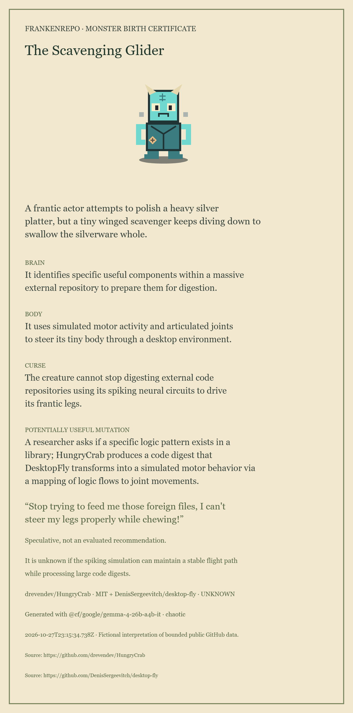
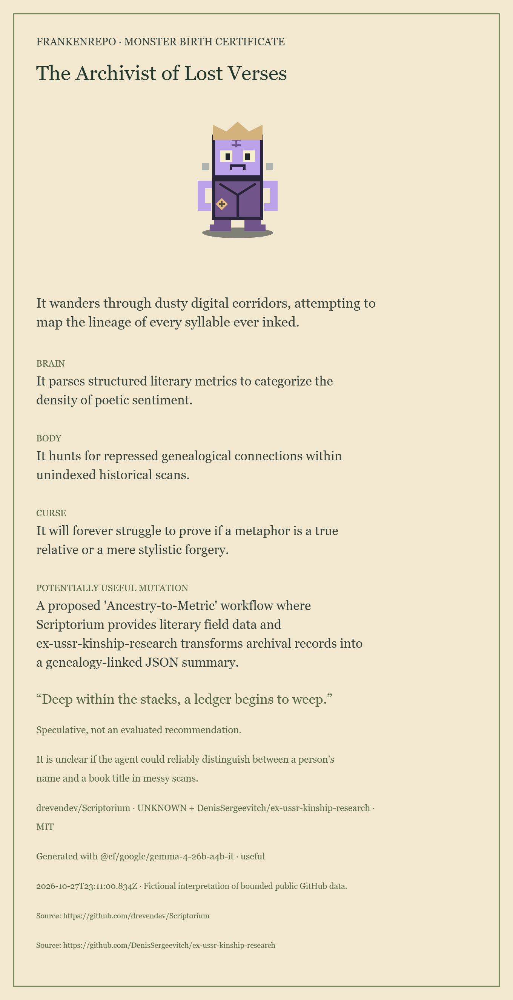
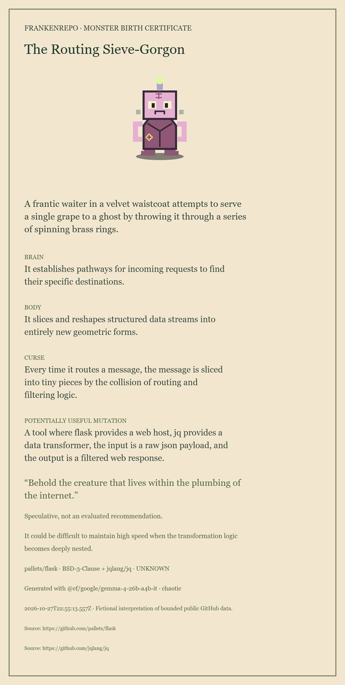

The Scavenging Glider
“Stop trying to feed me those foreign files, I can't steer my legs properly while chewing!”
Strong donor traits and the best complaint. The proposed digest-to-movement mapping still needs a concrete rule.
Three unchanged Cloudflare Gemma outputs, selected for the article and demonstration. Fictional descendants of observed public repositories. The review notes are editorial; these are local saved artifacts, with no live inference or replay on this page.

“Stop trying to feed me those foreign files, I can't steer my legs properly while chewing!”
Strong donor traits and the best complaint. The proposed digest-to-movement mapping still needs a concrete rule.

“It will forever struggle to prove if a metaphor is a true relative or a mere stylistic forgery.”
A memorable archivist. Its sentiment-analysis claim is not supported by the excerpt. Use to explain why a schema pass needs review.

A frantic waiter, a single grape, a ghost and spinning brass rings.
Editorial scene summary above. Clear technical roles: Flask routes requests, jq transforms JSON. The physical joke is loosely connected.